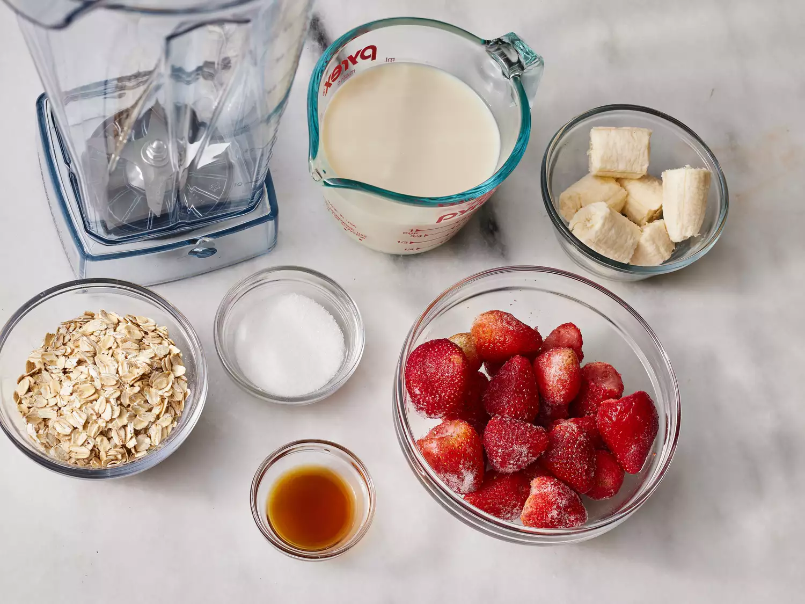
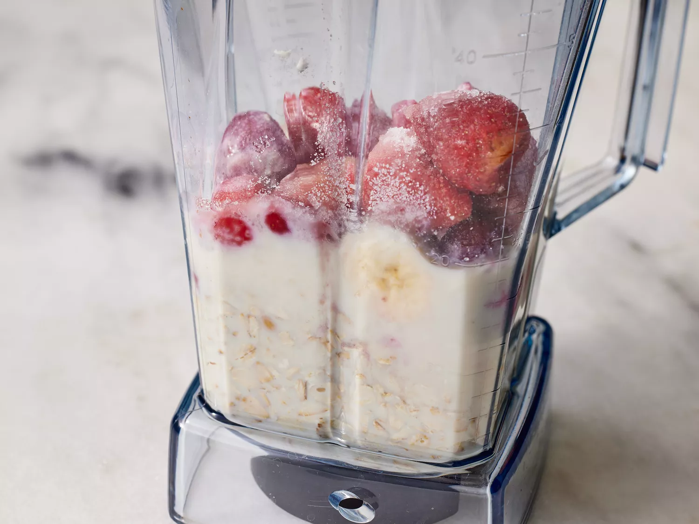
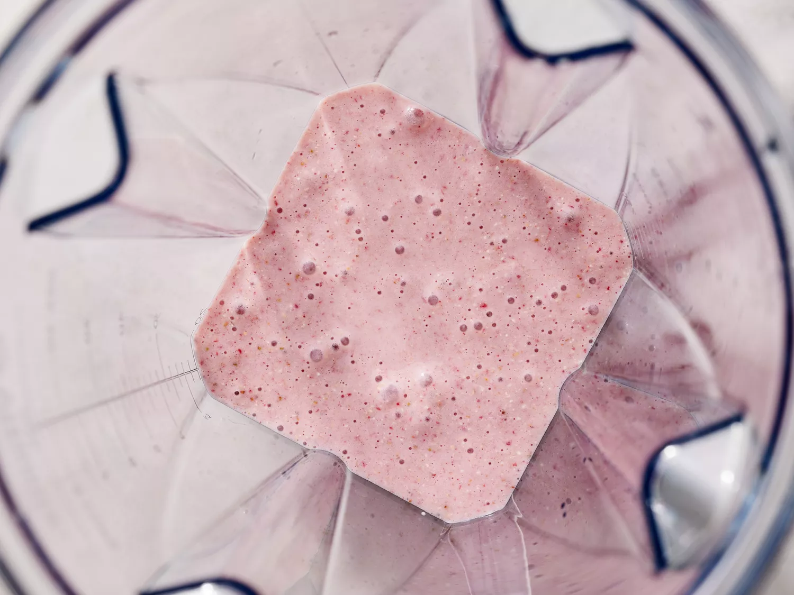
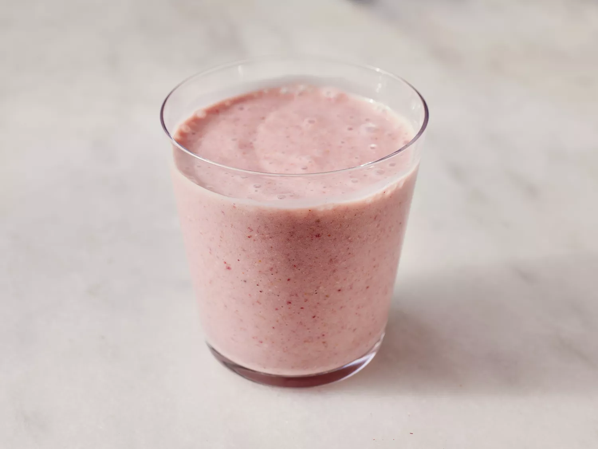

This vegan oatmeal smoothie has a deep pink color and a rich, creamy texture.
It's very filling, and perfect for people in a rush in the morning.
You don't have to give up a good breakfast when it's this fast to make! I use vitamin fortified soy milk.
Gather ingredients.
Blend soy milk, oats, strawberries, and banana in a blender until smooth. Add sugar and vanilla and blend again until smooth.
 Pour into glasses and serve.
